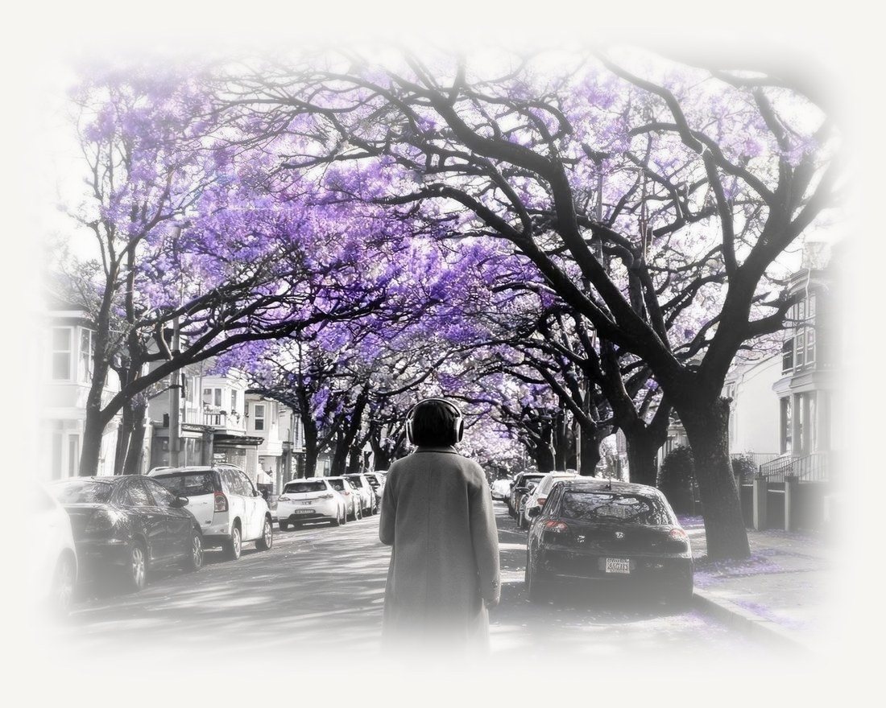
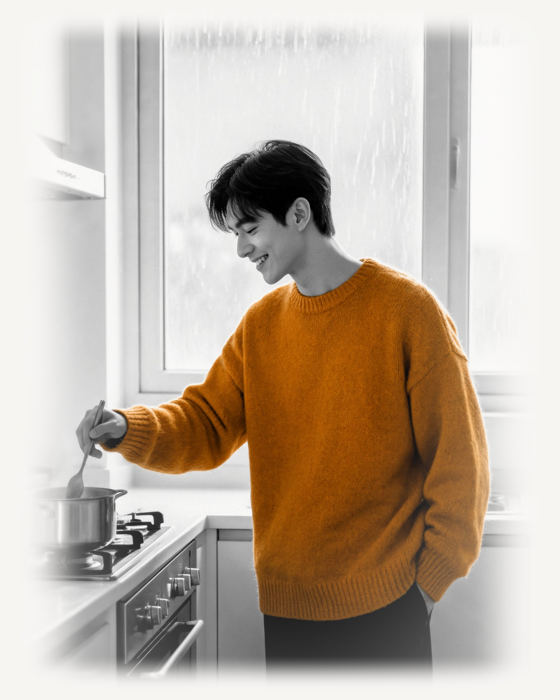
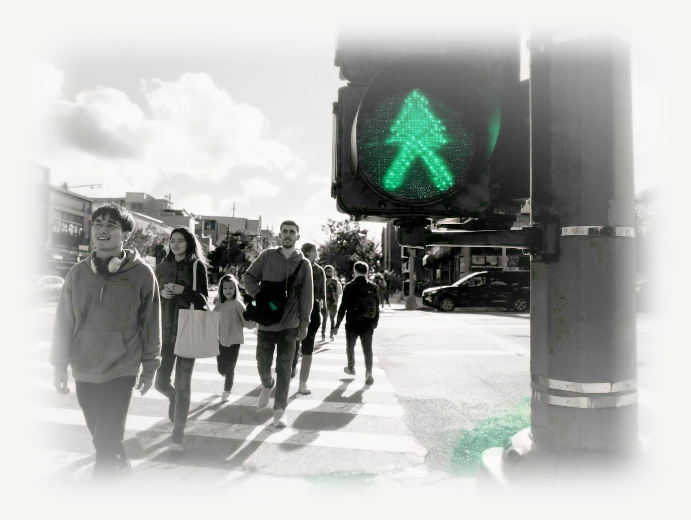

Where this came from
It started with one question.
If your chart describes who you are, what does it sound like? The rest is composing, testing, and listening to members. No robes. No guru. A music company.

Experience yourself in sound
Your exact birth moment becomes four personal frequencies, embedded inside music for meditation, visualization, work, or a walk on the beach.
Voices
Neuroscience
“Zodiac.fm helps people access aspects of themselves that have always been there. Listening to your frequencies bypasses language and creates profound levels of self-awareness and coherence. This leads to clearer decisions, more authentic relationships, and expanded possibilities.”
Srini Pillay, M.D.Harvard-trained psychiatrist, brain-imaging researcher
Astrology
“This music tickled my soul … Give it a try — you’ll love it.”
Debra SilvermanAstrologer to Sting, Jennifer Aniston, and More
Human Design
“Zodiac core frequencies translate this unique imprint into sound, bypassing the mind and speaking directly to the body.”
Barbara DitlowHuman Design Mentor, Master Practitioner, Trained/Certified/Endorsed by Ra Uru Hu (Founder of Human Design)
Your Unique Frequencies
Every birth moment carries a measurable signature. Zodiac turns yours into four frequencies: who you are, how you relate, your energy, your opportunity. Each becomes a piece of music that exists for exactly one person.


*Sample frequencies. Yours come from your birth date, time, and place.
Where it lives
Your personalized playlist follows your day. Out the door in the morning. The record on in the afternoon. Rain at the window and nowhere to be. The long walk home. The world keeps playing your colors back to you.




Results
Abundance
“Instead of 10 paid members, I got 30 paid members in 30 days.”
Jennifer K. HillGlobal Wellness Leader, Founder, OptiMatch
Coming home
“My Eeyore mind is gone. I let life in now. My wife even says I’m softer.”
Todd ShipmanFounder & CEO, Quantum Wellness Leader
Flow
“…having it on in the background while I work has allowed me to slip into my flow state MUCH easier …”
Alex KikelTrainer to Olympians and Professional Athletes
Identity
“I’m just finishing my first week … I feel like ME.”
Amber Hedrick
Opportunity
“I have received multiple unexpected new very lucrative opportunities since I began tuning in.”
Leanne ElyBest-Selling Author, Founder, Saving Dinner
Nine minutes
“I went from ranting and complaining in my pages to writing in a way that felt hopeful … in only 9 minutes.”
Tangie NadimiFounder, Feel Good Human Design
Ahead of the curve
“Zodiac.fm is way ahead of the curve.”
Maya Shetreat, MDAdult and Pediatric Neurologist, Expert Astrologer, Best-Selling Author
Witnessed
“Zodiac.fm is brilliant. … The transformations I’ve witnessed are remarkable.”
Dr. Pedram ShojaiBest-Selling Author, The Urban Monk
The invitation
“If you’re tired of living out of tune with yourself, this is your invitation home.”
Rhonda BrittenAuthor of “Fearless Living,” Emmy Award-Winner
The study
of completers said they would recommend Zodiac.
of members who used it as designed for a year called it life-changing.
Our own 52-week internal beta: 300 people started, 278 completed. “As designed” means at least nine minutes a day on average, in balance. We report it exactly that way.
The music
Every track is a full piece of music, not a tone, not a spa loop, with one of your four frequencies running underneath it from the first note to the last. Pick what you want from the next nine minutes: reset, calm, focus, energy. Press play.
Three tracks from one member’s playlist
RESET · CALM · DE-STRESS · UNWIND · GROUND
Core · 486.2 Hz
ENERGY · MOTIVATE · BUILD · DRIVE · FLOW
Vitality · 652.4 Hz


Where this came from
If your chart describes who you are, what does it sound like? The rest is composing, testing, and listening to members. No robes. No guru. A music company.
Come hear it
Zodiac is a paid membership. Every straight answer about pricing lives at zodiac.fm.